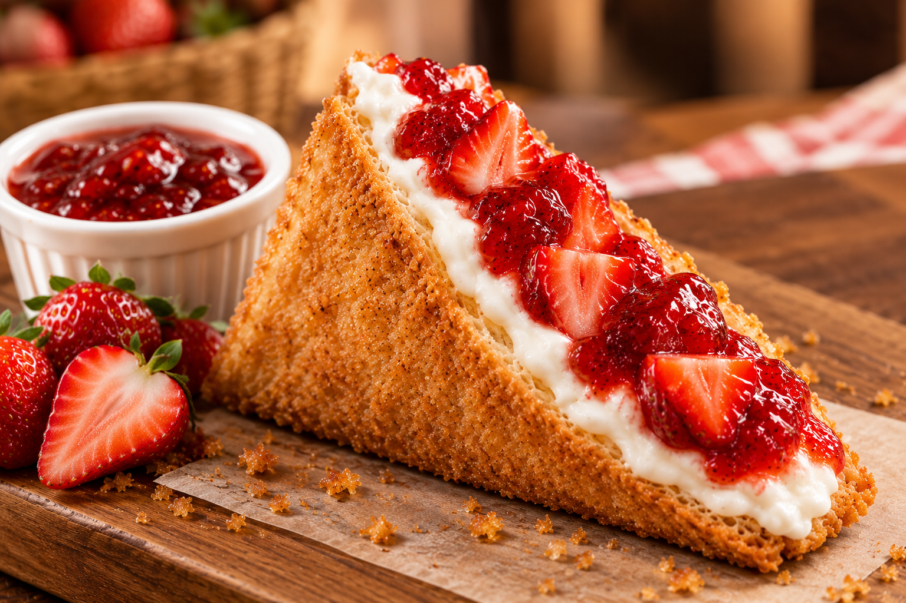
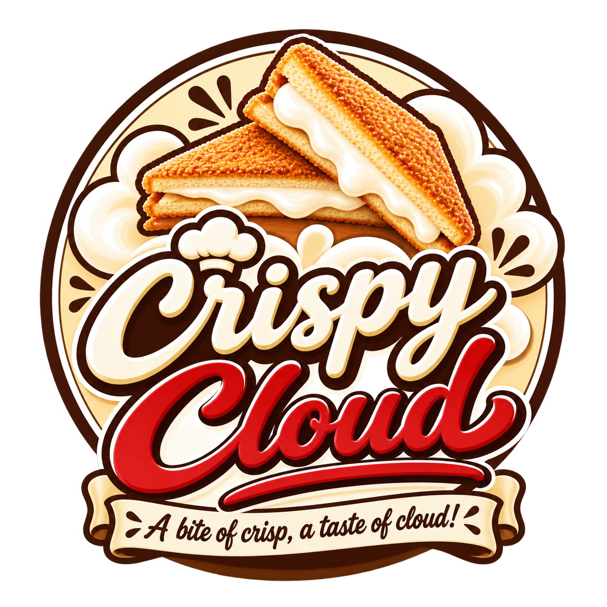
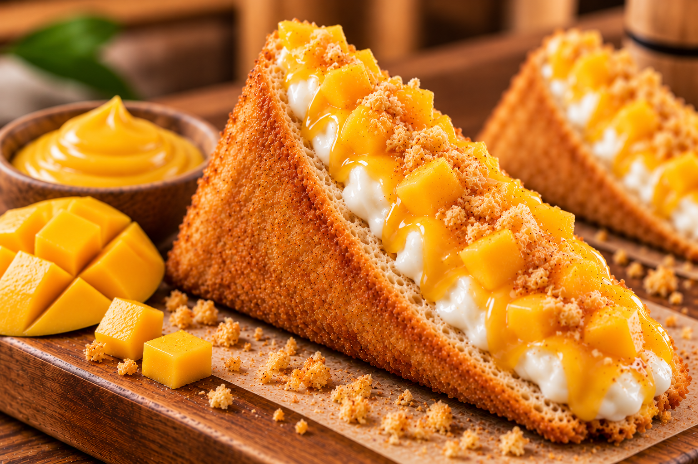

Strawberry Cream
A fruity, sweet cream filling paired with strawberry topping for a bright, berry-inspired treat.
₱89
Crispy CloudA bite of crisp, a taste of cloud!Golden, crispy on the outside. Smooth, creamy, and delightfully sweet on the inside.
“A bite of crisp, a taste of cloud!”
Explore Our Flavors ↓
Discover a fun twist on dessert with Crispy Cloud’s Japanese-inspired deep-fried sandwich concept. Every sandwich brings together a golden, crunchy outer shell and a rich, creamy filling—finished with toppings that make every flavor special.
Crispy Cloud is a dessert concept built around a fun and memorable take on a Japanese-inspired deep-fried sandwich. We bring together a golden, crispy triangular sandwich shell and a smooth, rich cream filling to create a dessert that feels familiar yet different from everyday sweets.
Our idea is simple: combine contrasting textures—the satisfying crunch on the outside and a soft, creamy taste on the inside—with flavors that appeal to different cravings. From fruity Strawberry Cream and Mango Cream to Chocolate Cream, Matcha Cream, Crème Brûlée, Yema Cream, and Ube Cream, our menu offers a colorful selection of sweet treats for dessert lovers.
At Crispy Cloud, we want each flavor to feel like its own little experience. Our brand is playful, approachable, and inspired by the creativity of Japanese-style dessert trends while celebrating flavors that Filipino customers know and love. Whether you are discovering a new dessert or looking for a sweet treat to share, Crispy Cloud invites you to enjoy something crispy, creamy, and cloud-like.
A bite of crisp, a taste of cloud!
Stay connected with Crispy Cloud for product highlights, seasonal announcements, loyalty-stamp-card updates, collectible mini-plushie features, and future special promotions. Promo mechanics, availability, and dates will be announced on our official Facebook page.
Look out for loyalty-program announcements and updates for returning customers.
Follow our page for updates about cute mini-plushie collectibles and brand activities.
Check our official page for upcoming flavor spotlights, seasonal features, and promotional announcements.
For product inquiries, collaborations, and store information, please contact us through our official channels.
Brand: Crispy Cloud
Product: Japanese-inspired deep-fried cream sandwiches
Location: Brgy. Dolores, City of San Fernando, Pampanga
Crispy Cloud · Japanese-inspired dessert · deep-fried sandwich · crispy cream sandwich · Strawberry Cream · Chocolate Cream · Matcha Cream · Crème Brûlée · Mango Cream · Yema Cream · Ube Cream · unique dessert · sweet treats · dessert brand Philippines